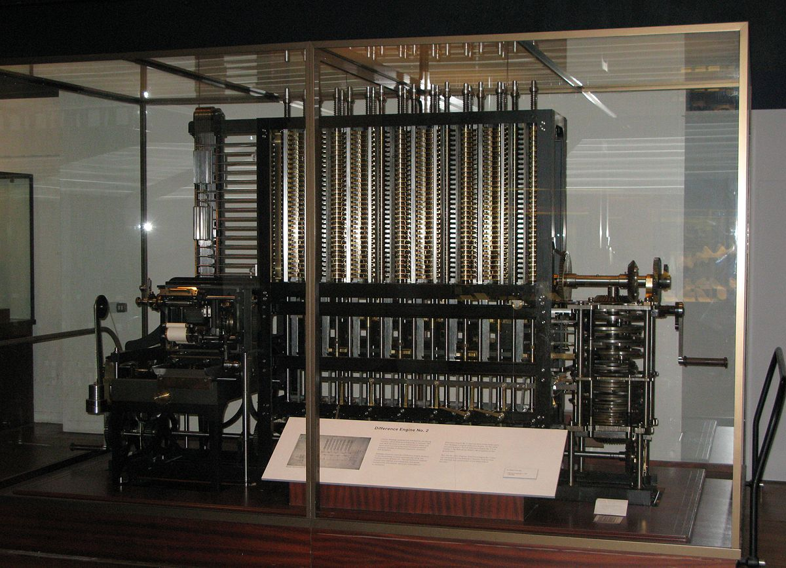

A difference engine is an automatic mechanical calculator designed to tabulate polynomial functions. It was designed in the 1820s, and was first created by Charles Babbage.
The name difference engine is derived from the method of divided differences, a way to interpolate or tabulate functions by using a small set of polynomial co-efficients. Some of the most common mathematical functions used in engineering, science and navigation are built from logarithmic and trigonometric functions, which can be approximated by polynomials, so a difference engine can compute many useful tables.
In 1784 J. H. Müller, an engineer in the Hessian army, devised and built an adding machine and described the basic principles of a difference machine in a book published in 1786 (the first written reference to a difference machine is dated to 1784), but he was unable to obtain funding to progress with the idea.
The punched cards used by the difference engine were inspired by the method of programming the weaving patterns in a Jacquard loom.
Charles Babbage began to construct a small difference engine in c. 1819 and had completed it by 1822 (Difference Engine 0). He announced his invention on 14 June 1822, in a paper to the Royal Astronomical Society, entitled "Note on the application of machinery to the computation of astronomical and mathematical tables". This machine used the decimal number system and was powered by cranking a handle. The British government was interested, since producing tables was time-consuming and expensive and they hoped the difference engine would make the task more economical.